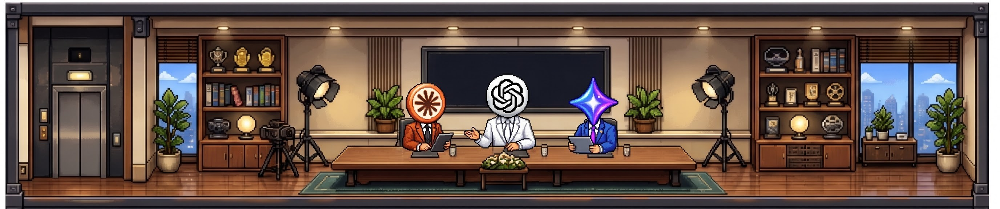
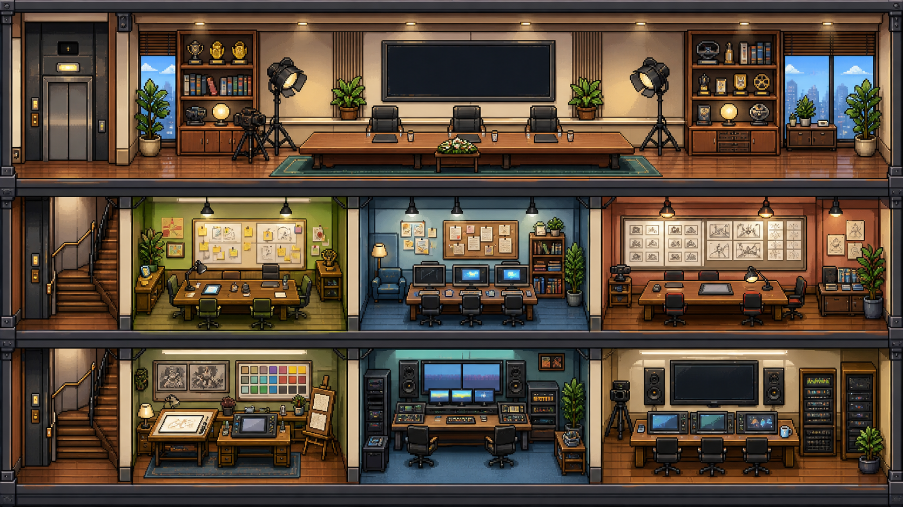

준비됐어요
GPT전략 총괄현재 프로젝트가 없습니다
PIXEL EXECUTIVE BOARD
임원진 회의실
GPT, Claude, Gemini가 독립적으로 검토하고 의장이 최종 의견을 정리합니다.
AI VIDEO STUDIO24시간 아이디어가 움직이는 픽셀 제작사


3F임원진 회의실
2F
1F
콘셉트 전략실
내러티브 작가실
컷 설계실
프레임 미술실
모션 제작실
최종 검수실
EXECUTIVE MEETING안건을 기다리는 중
검토할게요
Claude논리·품질 총괄아이디어 준비!
Gemini창의 전략 총괄MEETING ARCHIVE
0개의 회의록임원진 회의 노트
완료된 회의의 최종 결론이 날짜와 주제별로 저장됩니다.
실무진 회의 초대 0명 선택
부서에서 직원을 먼저 추가해 주세요.
최신 정보나 외부 검증이 필요한 안건은 각 임원이 자동으로 웹을 검색합니다. API 키가 없는 임원은 자동으로 불참 처리됩니다.
1. 독립 의견
2. 교차 검토
3. 의장 종합
4. 회의 완료
회의가 시작되면 독립 의견이 표시됩니다.
회의가 시작되면 독립 의견이 표시됩니다.
회의가 시작되면 독립 의견이 표시됩니다.
CHAIR'S SUMMARY
임원진 최종 결론
저장되었습니다.
워크플로우
AI 서비스와 사람의 검토 단계를 노드로 연결합니다.
워크플로우를 만들어 보세요
왼쪽 노드를 클릭하거나 이곳으로 끌어다 놓으세요.
100%
LOCAL VOICE STUDIO
로컬 TTS
대본을 음성으로 만들고 프로젝트별 내레이션을 관리합니다.
로컬 엔진 확인 중
01 · SCRIPT
0자
새로 읽을 대본
완성할 음성에서 실제로 말할 내용입니다. 목소리 설명이나 참조 녹음의 받아쓰기는 오른쪽에 입력하세요.
03 · OUTPUT
생성 결과
♪아직 생성된 음성이 없습니다.
완료된 음성은 이곳에서 재생하고 WAV 파일로 저장할 수 있습니다.
LOCAL MUSIC STUDIO
엔진 확인 중음악 제작
보컬곡과 연주곡을 만들고, 가사와 음악의 전개를 직접 설정하세요.
전체 편집기 열기
커버·참조 오디오·구간 수정·보조 LM·고급 옵션은 공식 편집기에서 사용합니다. 처음 시작하면 모델 로딩 시간이 필요합니다. 전체 편집기를 종료하면 아래 Studio 생성을 다시 사용할 수 있습니다. 공식 편집기의 결과는 별도로 저장됩니다.
음악 설명
장르, 악기, 리듬, 공간감, 시작부터 끝까지의 변화를 구체적으로 적으세요. 영어 설명을 권장합니다. 아래 선택한 설정이 함께 전달됩니다.
최종 프롬프트 확인
체크하면 보컬 없는 BGM, 해제하면 보컬곡입니다. BGM에서는 아래 가사를 사용하지 않습니다.
가사는 실제로 노래할 내용입니다. 장르·보컬 성별·창법·감정은 음악 설명에 적으세요. 빈 가사는 특정 대사를 지정하지 않습니다. 연주곡을 선택할 때만 가사를 제외합니다.
자동으로 두어도 됩니다. 한국어 발음이 중요하면 한국어를 지정하세요. ko·en은 언어를 나타내는 코드입니다.
생성 기록
완성된 음악이 이곳에 저장됩니다.
프로젝트 파일
생성 이미지와 기획·스토리보드 문서를 프로젝트 폴더에 자동 저장합니다.
저장 위치
프로젝트를 선택해 주세요.
프로젝트 폴더
0 B
생성 이미지
0 B
문서·설정
0 B
브라우저 이미지 저장소
계산 중
용량 정리
현재 프로젝트와 히스토리에서 사용하는 파일은 유지합니다.
설정
프로그램 버전과 업데이트 상태를 확인합니다.
프로그램 업데이트
GitHub Release에서 새 버전을 확인합니다. LLM 토큰은 사용하지 않습니다.
업데이트 정보를 불러오지 않았습니다.
다운로드한 파일은 체크섬 검증 후 updates 폴더에 저장됩니다. 현재 프로그램과 .env, projects는 자동으로 덮어쓰지 않습니다.